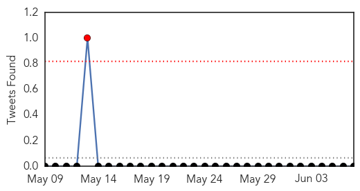
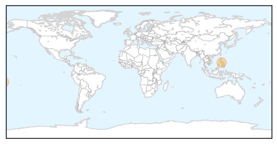
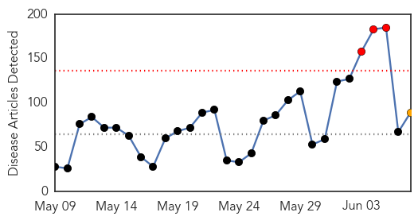
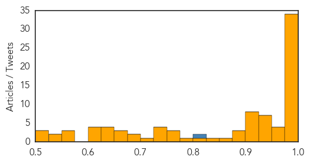

Dengue Fever
30-Day Web Trend
1 alerts, 1 warnings
30-Day Twitter Trend
1 alerts, 0 warnings

Article Locations
Article Confidences

Top Articles:
Top Tweets:
-
No tweets found for Jun 07, 2015
Unknown
30-Day Web Trend
3 alerts, 1 warnings

30-Day Twitter Trend
4 alerts, 1 warnings
Article Locations
Article Confidences
Top Articles:
- 1.000
- S. Korea reports 5th death from MERS, 14 new cases
- 1.000
- (Yonhap Interview) Early isolation crucial to curb MERS
- 1.000
- (5th LD) Park says utmost efforts under way to contain MERS
- 0.999
- South Korea MERS virus cases reach 50 people
- 0.999
- The Portland Press Herald / Maine Sunday Telegram
- 0.999
- South Korea MERS Cases Rise as Hong Kong Increases Alert Level
- 0.999
- (Yonhap Interview) Early isolation crucial to curb MERS: Saudi expert
- 0.999
- South Korea reports 9 more MERS cases
- 0.999
- South Korea MERS outbreak claims fifth victim
- 0.998
- Sixth death from MERS, 23 more cases confirmed
- 0.998
- MERS patients rise to 64
- 0.998
- No mutation in virus found in Korea
- 0.998
- Top hospital new source of MERS outbreak
- 0.998
- Deaths and patient numbers increase in battle against disease-INSIDE Korea JoongAng Daily
- 0.998
- (2nd LD) S. Korea reports 9 additional MERS cases, raising total to 50
- 0.997
- S. Korea to keep tabs on cellphones to stop killer virus spreading — RT News
- 0.997
- S. Korea reports 23 new cases of MERS, bringing total to 87
- 0.996
- Saudi- 7 more infected with MERS
- 0.996
- Central, municipal authorities in S. Korea to cooperate in tackling MERS - Xinhua
- 0.995
- South Korea MERS infections reach 50
- 0.995
- MERS outbreak: 2,300-plus quarantined; 1,300 schools closed in South Korea
- 0.995
- South Korea says 9 new MERS cases, total now is 50
- 0.993
- S Korea vows ‘all-out effort’ to curb MERS outbreak
- 0.992
- Over 20,000 Foreign Travelers Cancel Plans To Visit South Korea
- 0.991
- 6th person dies of MERS virus in S Korea
- 0.990
- As MERS Claims Fifth Life, South Korea Resorts to Drastic Containment Measures
- 0.988
- Asia on high alert over possible MERS spread
- 0.986
- donga.com[English donga]
- 0.986
- Seven more infected with MERS
- 0.984
- Nation goes all-out to contain MERS
- 0.984
- Govt checks travel history of contact with MERS patients
- 0.981
- S. Korea to Track Cellphones of People under MERS Quarantine
- 0.980
- Ministry discloses full MERS hospital list-INSIDE Korea JoongAng Daily
- 0.978
- South Korea promises 'all-out' approach to contain Mers outbreak that has killed 5, East Asia News & Top Stories
- 0.973
- S. Korea to track cellphones to prevent MERS spread
- 0.968
- S Korea vows 'all-out' effort to curb growing MERS outbreak
- 0.962
- South Korea to track cellphones to prevent MERS spread; fifth patient dies
- 0.961
- Belated MERS steps
- 0.944
- Samsung chief, 73, to remain in Seoul hospital despite patients, staff being exposed to Mers, East Asia News & Top Stories
- 0.936
- MERS outbreak: 2,300-plus quarantined in South Korea
- 0.934
- 14 MERS Infections Added in S.Korea, 1 More Death Reported
- 0.933
- 24 MERS-related hospitals disclosed in S. Korea after 14 infections added
- 0.932
- (EDITORIAL from Korea JoongAng Daily on June 8)
- 0.929
- Health Ministry: Avoid trips to S. Korea
- 0.929
- MERS cases rise to 50 in S. Korea with 9 more infections
- 0.921
- Cities join fight against MERS
- 0.917
- Chicago Tribune
- 0.917
- Chicago Tribune
- 0.915
- In brief: S. Korea bolsters efforts against virus
- 0.904
- donga.com[English donga]
Showing top 50 articles...
Top Tweets:
- 0.812
- RT: And though attention has been on the MERS outbreak in Korea the virus continues to cause trouble in Saudi Arabia. h…